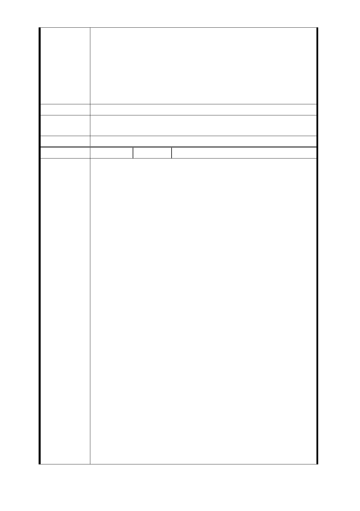

由捨近求遠，增加工程費到南昌路。本站原有商業區面已有
1000平方公足以上，比LG03 ，LG04站大，沒理由再增加住宅
區面積，萬大線與淡水線連接站，已有原淡水線出入口可使
用，興建信義線，也沒增加車站， 南昌路31巷夾處於住宅區
內，偏離萬大線， 捷運局不可假借名目，強行變更地目，強
佔私有土地圖利，如果政府相關單位漠視百姓權益，不惜發
動居民聯署透過媒體揭發弊端!!
建議辦法
市府回應
意見
同編號捷四-10 回應意見。
委員會決議 同編號交一－1 委員會決議。
編 號 捷四-12C 陳情人 雲鼎商務旅店（103.10.1）
陳情書:
捷運萬大線台北市轄區LG01車站辦理捷運土地開發基地，原
變更都市計畫範圍為南海路及南昌路交叉口東南側，於地方
說明會表示採土地開發方式辦理，開發期程2～3年，後因南
海路側土地所有權人反對該變更都市計畫案，並提刪除南海
路增加南門市場用地之修正案，並經台北市政府修正提報都
市計畫審議委員會審議，於說明會亦說明開發期程需先安置
南門市場攤商4年，再辦理大樓興建，整體期程延長為7～8
年。本項修正計畫將私有土地所有權人之地上改良物先行拆
除，作為安置市府南門市場承租攤商使用，承租攤商為國有
財產承租人，依國有財產法第44條規定，管理機關應解約收
回，並給承租人所受之損失補償，並非徵收私有土地予以安
置，顯己違反國有財產法收益及處分之規定，故安置攤商必
陳情理由
非唯一辦法，另延長開發期程，對參與土地開發之土地所有
權人無法使用土地期程延長，利益受損加倍，並未相對增加
補償，極為不公平且權益受重大影響，故修正計畫顯已違反
土地徵收條例第3-2條規定興辦事業之公益性及必要性，亦違
反本條例第9條第1項第1、2款規定，徵收補償費發給完竣屆
滿三年，未依徵收計畫開始使用及未依核准徵收原定興辦事
業使用，即未依核定土地開發計畫區使用，另作為臨時安置
計畫使用。
陳情人於市政府相關說明會及陳情書中，均表示，未來聯合
開發應保障本人原為合法建物及合法經營旅館之權益，未來
聯合開發大樓，能提供原合法旅館經營及獨立出入空間之權
益，惟市府均一再表示，未來捷連車站興建需依徵收、補償
及拆遷後，再辦理投資人招商，是否可提供旅館經營涉其他
法規規定，投資人尚未確定，分配空間亦不能確定。
依土地徵收條例第56條規定，徵收之土地，得於徵收計畫書
- 48 -